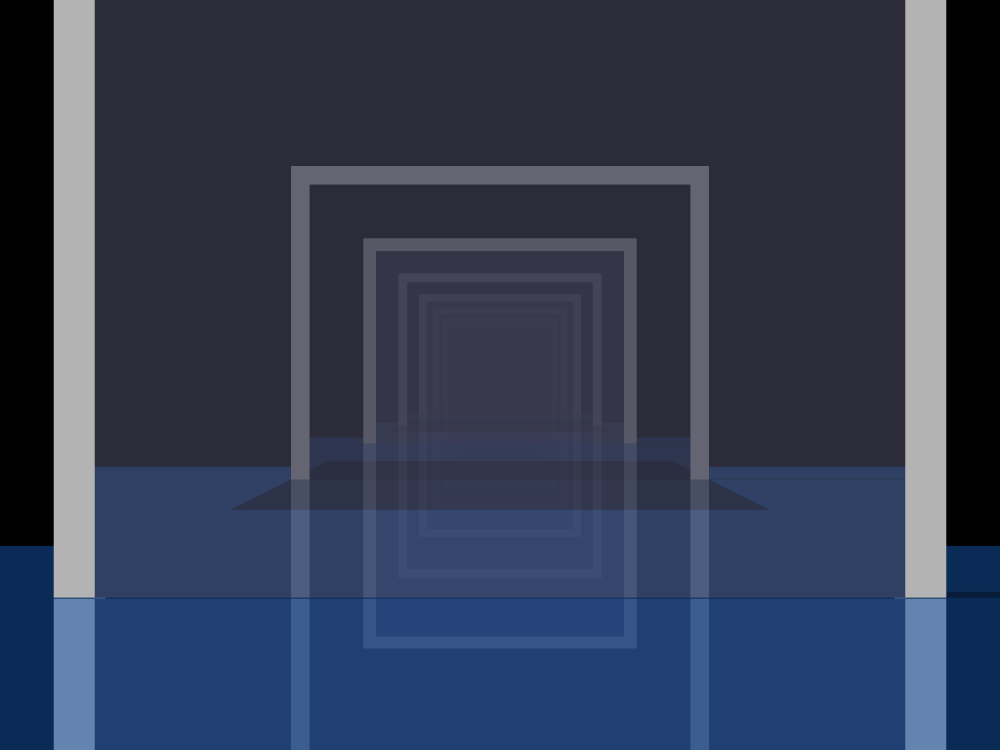
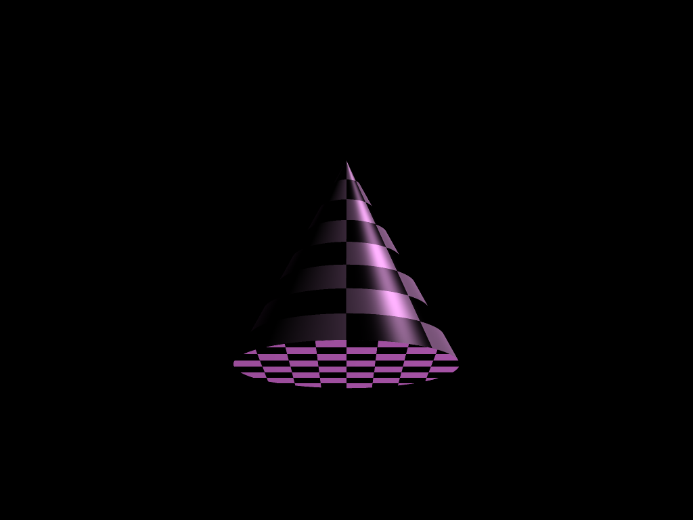
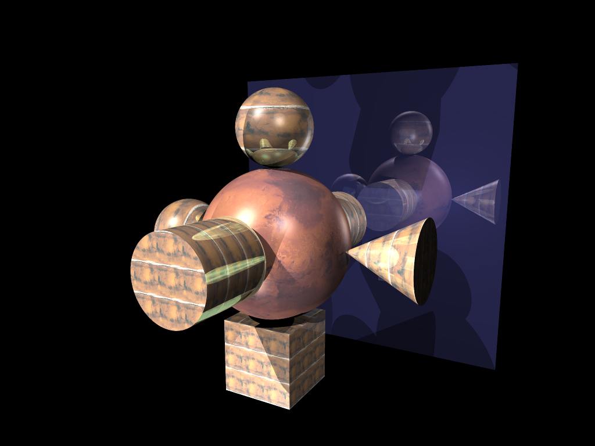
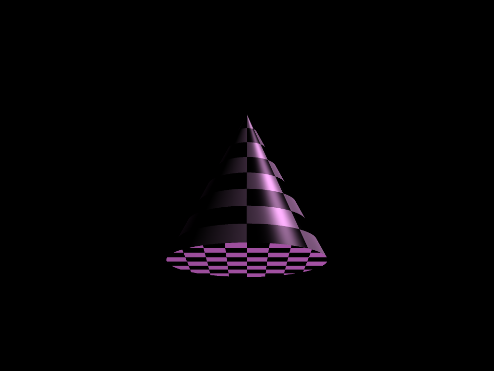
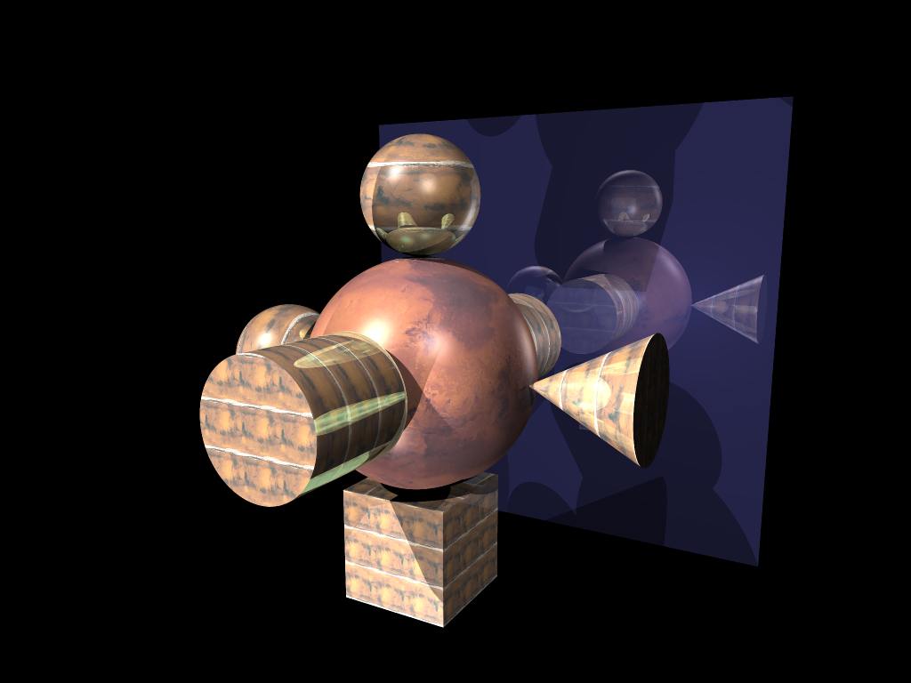
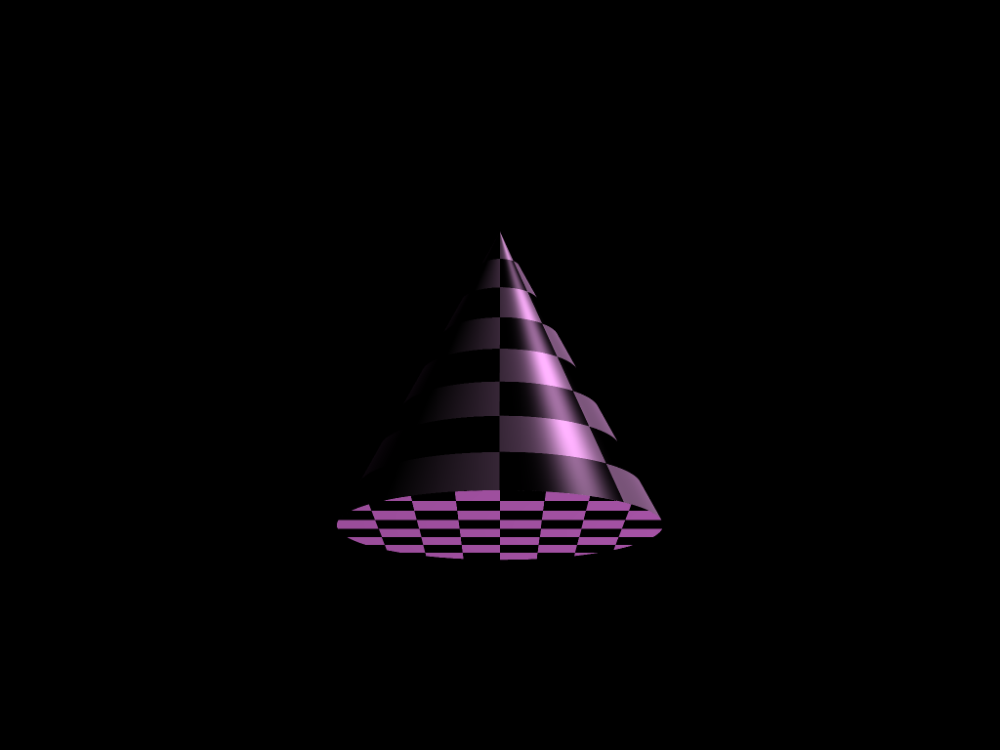
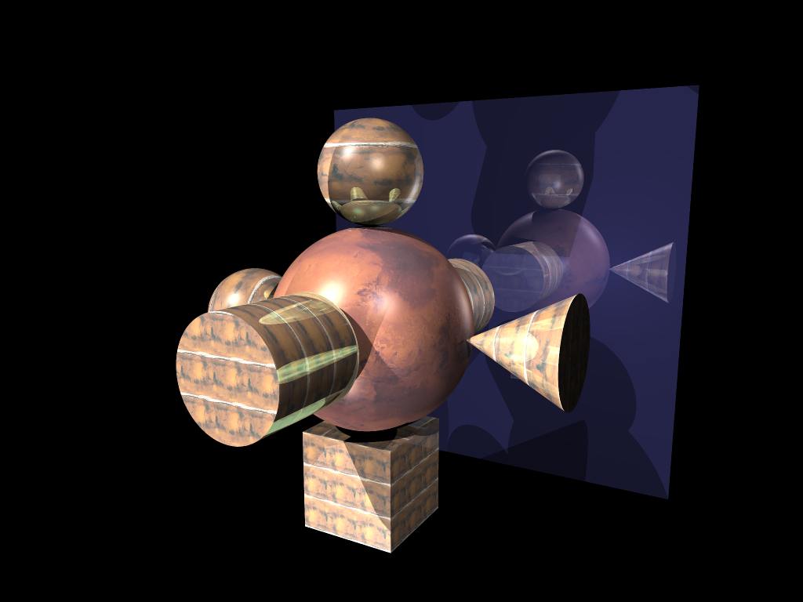

Raytracer
In this project I implemented a pipeline for casting rays into the scene and calculating intersections for spheres, cubes, cones, and cylinders. I also wrote a scene parser to load in json scene files. Next I added light sources, specifically directional, point, and spot lights. I also added shadows by casting rays from intersection points to light sources to check for occlusion. Then I added recursive reflections by casting rays from intersection points in the direction of the surface normal for objects with nonzero reflective material components. Finally I added texture mapping for cubes, spheres, cones, and cylinders to add custom textures.
Below are examples of the rendered outputs.


 





